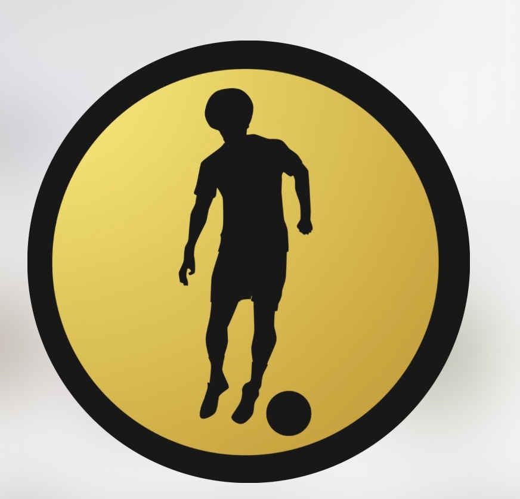

Чому звертаємося саме до нашого футбольного клубу?

- Досвідчений тренер: Наш тренер володіє великим досвідом роботи з дітьми та молодими гравцями. Він використовує сучасні методи навчання та допомагають розвивати футбольні навички кожного гравця.
- балансований підхід: Ми розуміємо, що футбол повинен бути веселим і водночас навчальним досвідом. Ми надаємо можливість кожному гравцю розвивати свої навички, а також виховуємо в них важливі цінності, такі як спортивна дисципліна, командний дух та взаємовиручка.
- Дружня атмосфера: В клубі “ФК ПАТРІОТ” панує сфера, де кожен гравець вітається та відчуває себе частиною команди. У нас створено сприятливі умови для розвитку дружби та командного душу серед дітей.
- Індивідуальний підхід: У нашому клубі ми розуміємо, що кожен гравець має свої потреби та ціли. Наш тренер надає індивідуальний підхід до кожного гравця, допомагаючи розвивати його сили та працювати над вдосконаленням слабких.